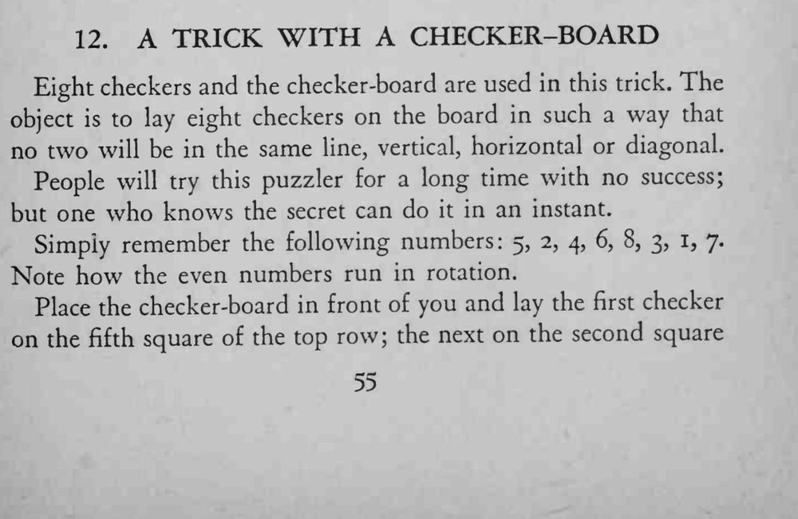
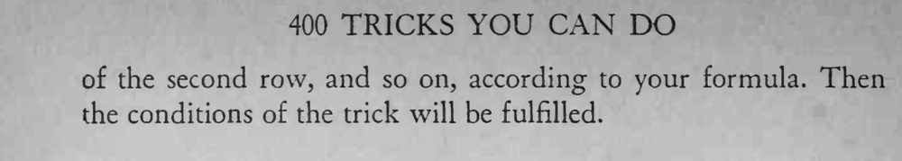

在棋盘上摆八枚棋子，使任意两枚都不在同一横线、竖线或斜线上，别人怎么试都摆不成。
背熟 5-2-4-6-8-3-1-7 这串数字，就能瞬间摆出答案。


Eight checkers and the checker-board are used in this trick. The object is to lay eight checkers on the board in such a way that no two will be in the same line, vertical, horizontal or diagonal. People will try this puzzler for a long time with no success; but one who knows the secret can do it in an instant. Simply remember the following numbers: 5, 2, 4, 6, 8, 3, 1, 7. Note how the even numbers run in rotation. Place the checker-board in front of you and lay the first checker on the fifth square of the top row; the next on the second square of the second row, and so on, according to your formula. Then the conditions of the trick will be fulfilled.